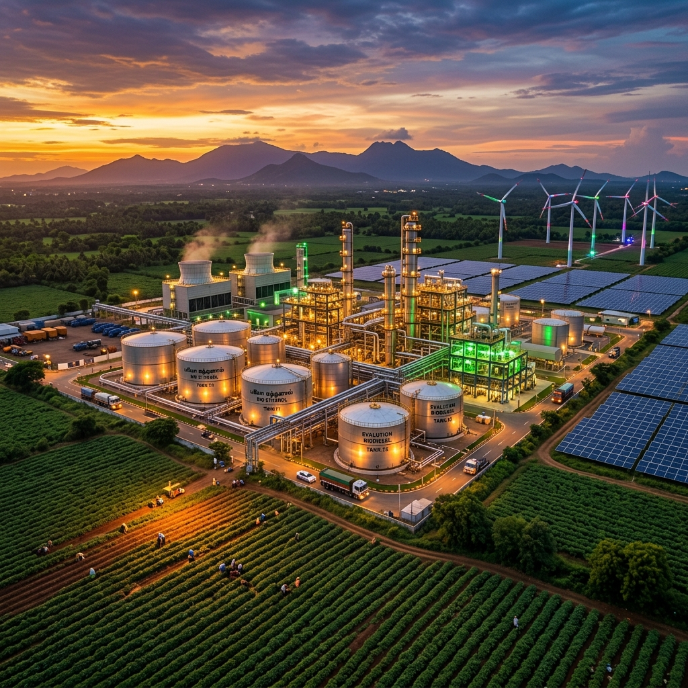
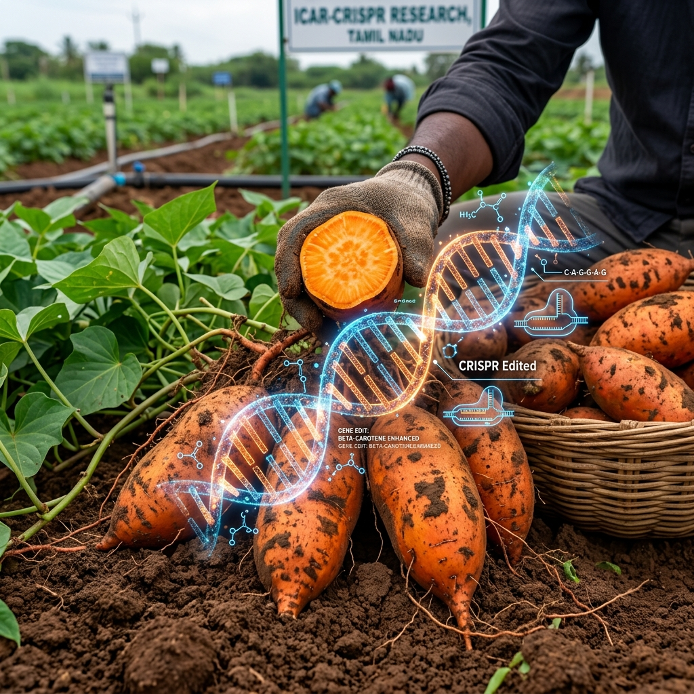
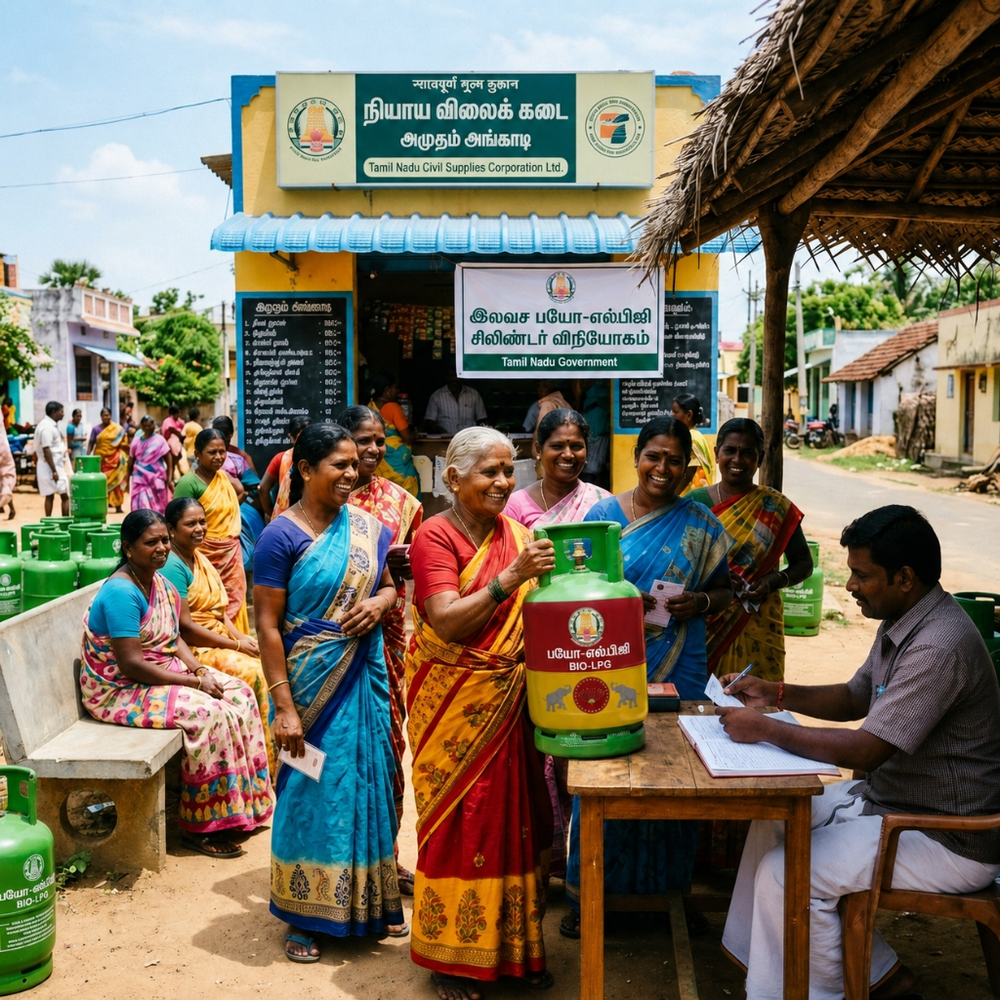

Transforming 1.35 lakh acres of cooperative sugar mills into next-generation green energy biorefineries — fuelling rural homes, empowering farmers, and building Tamil Nadu's clean energy future.
Scroll to explore
A landmark structural transformation of Tamil Nadu's cooperative sugar sector into an advanced circular bioeconomy
Replace sugarcane cultivation across 1.35 lakh acres of cooperative sugar mills with a CRISPR gene-edited high-starch industrial sweet potato crop.
Produce 100.17 crore litres of fuel-grade ethanol annually to power India's growing transport sector.
Generate 1.21 crore domestic Bio-LPG cylinders annually — clean cooking fuel from agricultural waste streams.
Provide 6 free cylinders per year to 20.2 lakh rural households through the Public Distribution System.
"From sugarcane fields to green energy hubs — Tamil Nadu leads India's biorefinery revolution."
Science-powered agriculture at the heart of the biorefinery supply chain

CRISPR-engineered varieties with enhanced starch content up to 32%, self-saccharifying properties that eliminate external enzyme costs.
Each crop cycle spans just 105–110 days, enabling two full cycles per year with a planned 65-day monsoon shutdown for soil restoration.
Estimated annual production of 37.8 lakh metric tonnes of raw tubers across 1.35 lakh acres.
Pest management through crop rotation and cover crops, maintaining soil health and biodiversity.
A fully integrated circular biorefinery converting every part of the crop into value
Harvested sweet potato tubers are cleaned, milled, and mashed into a uniform slurry for uniform processing.
Thermal liquefaction breaks down the starch matrix, preparing the substrate for efficient enzymatic conversion.
SSF process converts starch into sugars and ferments them simultaneously for maximum ethanol yield efficiency.
Multi-stage distillation followed by molecular sieve dehydration produces anhydrous, fuel-grade ethanol.
Waste streams undergo anaerobic digestion to produce biomethane — converting zero-value residues into fuel gas.
Methane undergoes partial oxidation to create synthesis gas (syngas) — the intermediate for LPG catalysis.
Syngas is catalytically converted into propane/butane Bio-LPG blend and bottled at refinery sites.
100.17 Crore Litres/Year
Anhydrous fuel-grade ethanol for transport blending
1.21 Crore Cylinders/Year
14.2 kg domestic-grade clean cooking cylinders
Digestate By-Product
Nutrient-rich digestate returned to farmer fields
Quantified impact at the scale of Tamil Nadu's energy transformation
Pure anhydrous ethanol meeting IS 15464 standards — enough to blend over 5 billion litres of petrol at 20% E20 ratio.
14.2 kg cylinders of clean Bio-LPG — a carbon-neutral drop-in replacement for fossil LPG, compatible with all existing stoves and appliances.
Strategically distributed across Tamil Nadu's cooperative mill zones
Distributed across cooperative mill zones for minimal transport costs and maximum crop proximity.
900 tonnes/day per hub of raw sweet potato tubers during the operating season.
64.3 acres harvested per day per hub to sustain continuous refinery operations.
65-day planned shutdown annually for maintenance, equipment upgrades, and soil restoration.
₹400 crore capital investment per hub; ₹5,600 crore total for all 14 hubs.
A revolutionary welfare scheme fuelled by homegrown green energy

Bio-LPG is bottled directly at the 14 refinery hubs, eliminating long-distance transport costs.
Cylinders distributed via the Public Distribution System (PDS) and Fair Price Shops across Tamil Nadu.
20.2 lakh rural households identified as beneficiaries under the welfare scheme.
Each eligible household receives 6 free 14.2 kg Bio-LPG cylinders annually — about one every 2 months.
This scheme directly replaces firewood and fossil LPG dependence in rural kitchens, improving air quality, women's health, and household energy security.
Strong financial fundamentals with an estimated annual net surplus of ₹3,363 crore
| Per Refinery Hub | ₹400 Crore |
| Total (14 Hubs) | ₹5,600 Crore |
| Ethanol Sales | ₹6,410.9 Crore |
| Bio-Fertilizer Sales | ₹180 Crore |
| Total Revenue | ₹6,590.9 Crore |
| Farmer Payments | ₹1,620 Crore |
| Refinery Operations | ₹1,607.7 Crore |
| Total Costs | ₹3,227.7 Crore |
Significantly higher income, faster payment, and lower cultivation costs compared to sugarcane
Proactive planning for agricultural and industrial challenges
The sweet potato weevil (Cylas formicarius) and viral diseases can reduce yields significantly.
Integrated Pest Management (IPM) through crop rotation and strategic cover crops to break pest cycles and maintain soil health between growing seasons.
H₂S in biomethane can poison the catalysts used for Bio-LPG synthesis, reducing conversion efficiency and catalyst lifetime.
Industrial-grade Zinc Oxide (ZnO) purification systems installed upstream of catalytic reactors to scrub H₂S to <1 ppm levels before syngas conversion.
Heavy monsoon rains can disrupt harvest schedules and raw material supply to refineries.
A planned 65-day annual shutdown is built into the operational calendar, aligning refinery maintenance with the monsoon season to eliminate lost production days.
Gene-edited crop varieties require GEAC (Genetic Engineering Appraisal Committee) approval for commercial cultivation.
Pilot programme at 3 mills initiates regulatory trials in parallel, generating field data to support expedited GEAC approval under India's 2022 CRISPR exemption rules.
Three cooperative mills selected for Phase 1 before statewide expansion
Pilot mills will validate the full crop-to-cylinder process, generate regulatory data, and establish best practices for wider rollout.
Following successful pilot validation, the programme scales to all 14 cooperative mill zones across Tamil Nadu — completing the full biorefinery network and delivering statewide welfare benefits.
The Tamil Nadu Biorefinery Initiative offers a replicable, financially viable, and welfare-positive model for transforming agricultural surplus into clean energy — setting a precedent for every state in India.